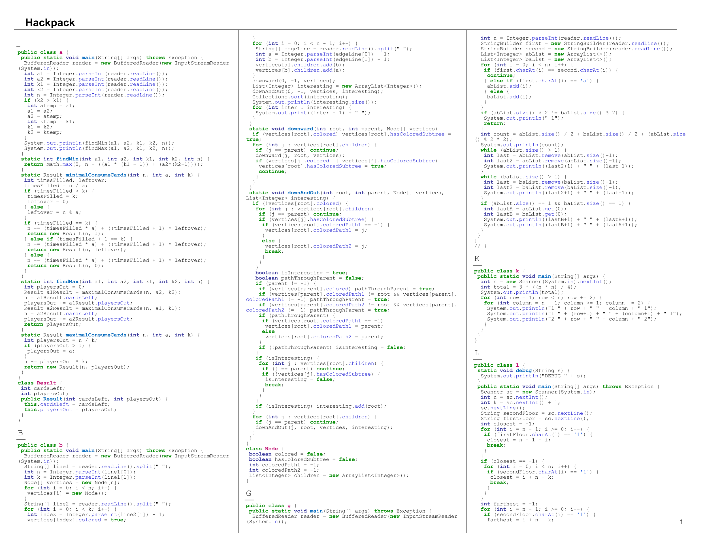

Quick Start
Upload a zip file that contains a tree of source code! That's it! If you want more control, put a configuration file in the root directory of the zip. An example configuration file is shown below.
Upload a zip file that contains a tree of source code! That's it! If you want more control, put a configuration file in the root directory of the zip. An example configuration file is shown below.
Click the images below to open a larger preview!

The program can be run with default settings. If more fine-grained control is desired, than a settings file can be used like the one below